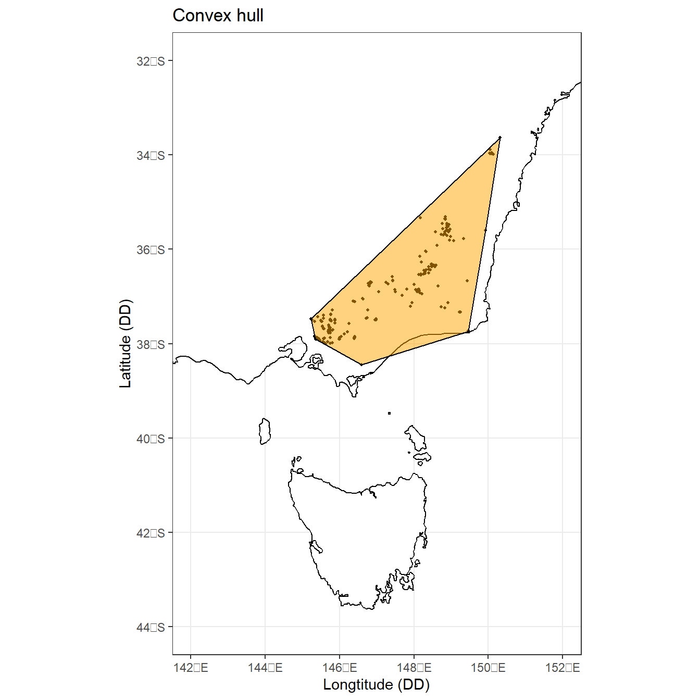
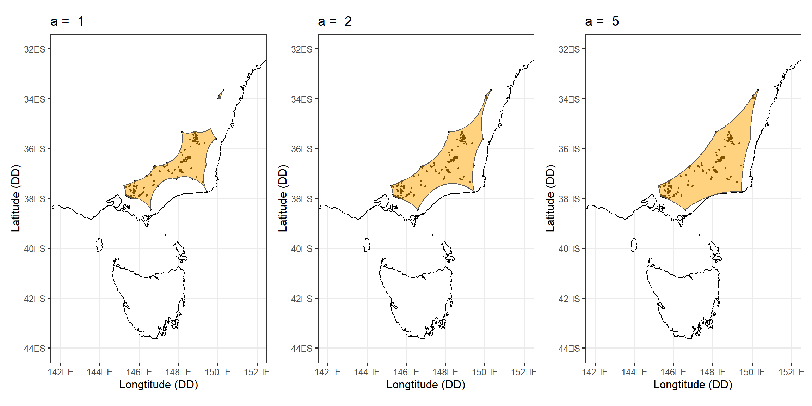
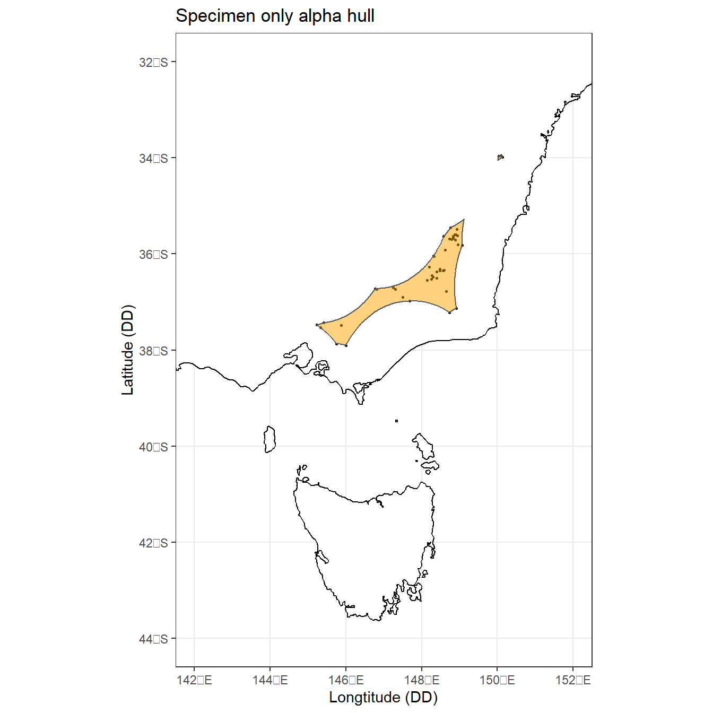
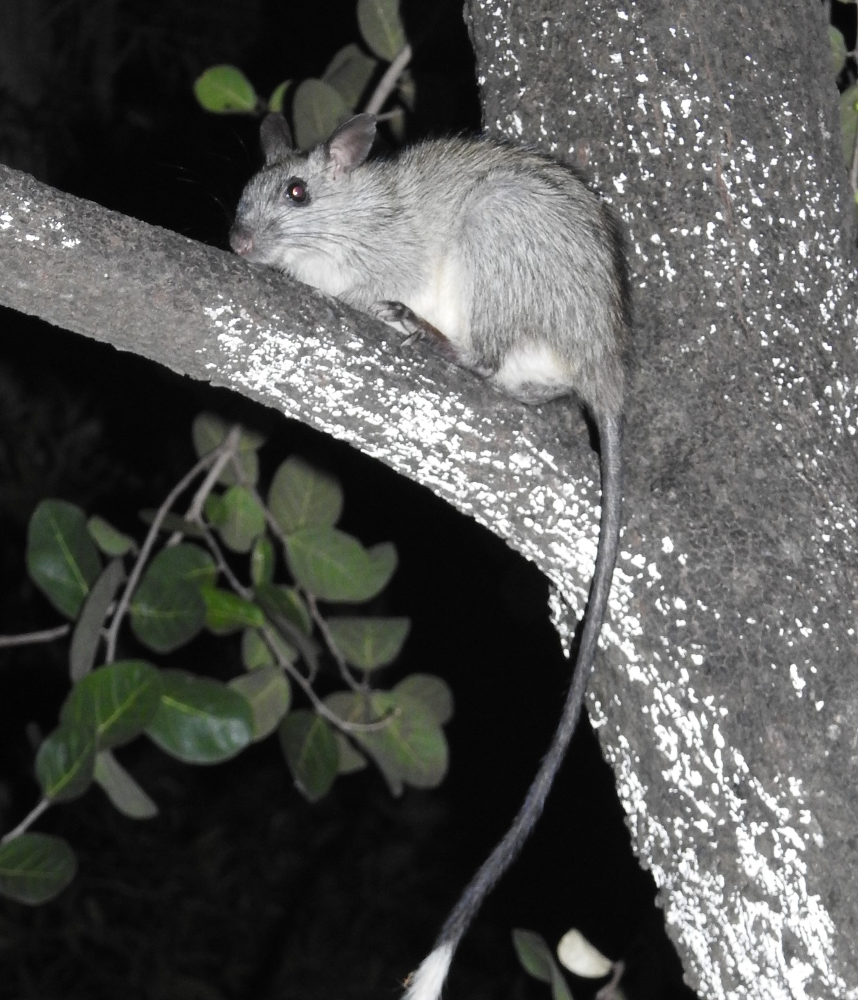
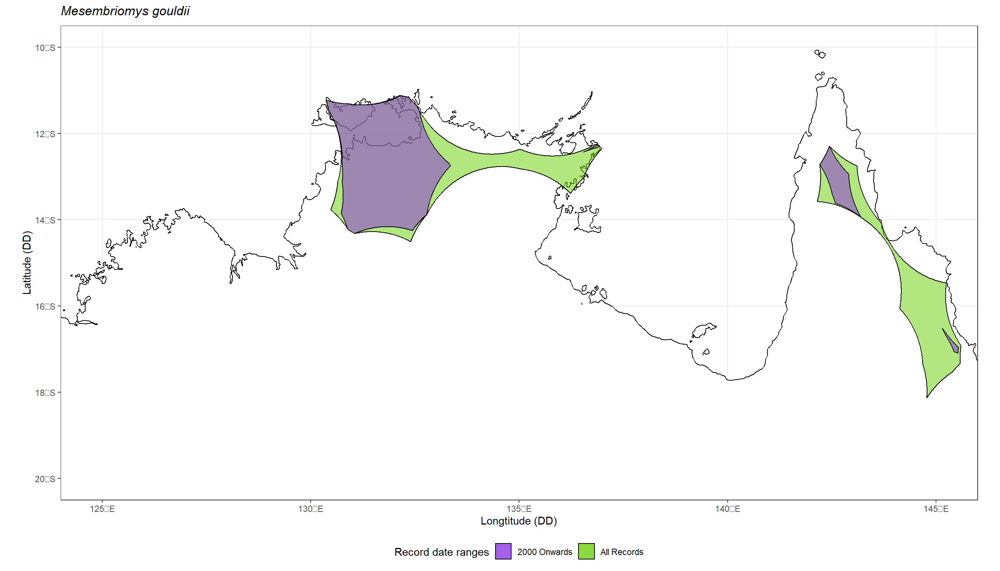

The ability to predict where a species resides is important in conservation ecology, but when a species has very few existing observations (i.e. a data-deficient species), predicting its distribution can be difficult (or impossible) using standard methods for species distributions.
Convex hulls and alpha hulls are two ways to plot the spatial distribution of data-deficient species, making it possible to calculate metrics that help us predict whether a species is threatened to become extinct (i.e. IUCN metrics).
Recently, Dr. Marsh and colleagues used alpha hulls to estimate the impact of the 2020 mega bushfires on invertebrates in southern Australia. Since invertebrate data is inherently sparse, alpha hulls are really useful when you only have a handful of records to work with.
In this post, we’ll explain the difference between convex hulls and alpha hulls and show you how to make them yourself!
Download data
To illustrate the various spatial polygons you can make, let’s look at an invertebrate species from Dr. Marsh’s study: an endemic damselfly, Austroargiolestes calcaris, commonly known as the Powdered Flatwing

First we will load the R packages we’ll need:
# install.packages("pacman")
pacman::p_load(remotes, galah, tidyverse, alphahull,
sp, sf, ozmaps, patchwork)Now let’s use galah to download occurrence records from the Atlas of Living Australia (ALA). Note that you will need to first enter a registered email with the ALA using galah_config before fetching records.
# Add registered email (register at ala.org.au)
galah_config(email = "your-email@email.com")# Download Powdered flatwing records
galah_call() |>
galah_identify("Austroargiolestes calcaris") |>
galah_filter(profile="ALA") |>
galah_select(group = "basic") |>
atlas_occurrences() -> dfly
# See first 10 rows
dfly |> head(10L)# A tibble: 10 × 8
decimal…¹ decim…² eventDate scien…³ taxon…⁴ recor…⁵ dataR…⁶ occur…⁷
<dbl> <dbl> <dttm> <chr> <chr> <chr> <chr> <chr>
1 -38.5 147. 2016-11-09 13:00:00 Austro… https:… 20b351… iNatur… PRESENT
2 -38 146. 2011-12-20 13:00:00 Austro… https:… d4e2c9… Reiner… PRESENT
3 -38.0 146. 2010-01-10 17:48:00 Austro… https:… 0c69fb… iNatur… PRESENT
4 -38.0 146. 2009-11-24 13:00:00 Austro… https:… b01df3… Reiner… PRESENT
5 -38.0 146. 2009-12-19 13:00:00 Austro… https:… 2ed539… Reiner… PRESENT
6 -38.0 146. 2018-02-04 03:40:00 Austro… https:… 586eb7… iNatur… PRESENT
7 -38.0 146. 2015-12-28 13:00:00 Austro… https:… 125786… Reiner… PRESENT
8 -37.9 145. 2004-10-30 14:00:00 Austro… https:… 9ff508… Reiner… PRESENT
9 -37.9 145. 2016-10-31 23:50:00 Austro… https:… fae8d5… ALA sp… PRESENT
10 -37.9 145. 2019-11-23 01:38:00 Austro… https:… faae5f… iNatur… PRESENT
# … with abbreviated variable names ¹decimalLatitude, ²decimalLongitude,
# ³scientificName, ⁴taxonConceptID, ⁵recordID, ⁶dataResourceName,
# ⁷occurrenceStatusBefore we can plot anything, we will also need to remove all duplicated values and any NA values!
# Remove duplicates & NAs
dfly |>
filter(!duplicated(decimalLongitude) & !duplicated(decimalLatitude)) |>
filter(!is.na(decimalLongitude) & !is.na(decimalLatitude) ) -> dfly_cleanMap a convex hull
A convex hull is a way to draw around all the points of a species on a map with as few lines as possible. It’s defined as the smallest polygon that encloses all the points in the data set.
To plot a convex hull on a map, we can use chull() to compute a convex hull from our cleaned Powdered Flatwing data. chull() computes a series of points that make up our convex hull.
# Compute convex hull
dfly_clean |>
dplyr::select(decimalLongitude, decimalLatitude) |>
chull() -> dfly_chull
dfly_chull[1] 149 148 1 25 137 223 401 355Next, we join the first point of the hull vector to the last point, creating a closed outline which can be plotted on a map.
# Join first point of hull to the last point
dfly_chull_pts <- c(dfly_chull, dfly_chull[1])Now we can get a map of Australia from the {ozmaps} package and use st_transform() to make sure it has the correct projection of 4326.
# Get map of Australia
aus <- st_transform(ozmaps::ozmap_country, 4326)And finally, we plot our Powdered Flatwing occurrence records and its convex hull on a map!
# Plot occurrences and convex hull
ggplot() +
geom_sf(data = aus,
colour = "black",
fill = "white") +
geom_point(data = dfly_clean,
mapping = aes(decimalLongitude, decimalLatitude),
colour = "black", size = 0.8) +
geom_polygon(data = dfly_clean[dfly_chull_pts, ],
mapping = aes(decimalLongitude, decimalLatitude),
fill = "orange",
colour = "black",
alpha = 0.5) +
coord_sf(xlim=c(142, 152),
ylim=c(-32,-44)) +
labs(title = "Convex hull",
x = "Longtitude (DD)",
y = "Latitude (DD)") + ## DD here stands for decimal degrees
theme_bw()
What is an alpha hull?
Like a convex hull, an alpha hull is also a way to draw the smallest polygon that encloses all the points in a data set. However, alpha hulls differ because they use an alpha parameter to control how tightly the boundary fits around a set of points. This method creates concave, arched edges that fit around occurrence records more tightly. A tighter boundary around our points helps us avoid over-predicting the range of a species.
To illustrate, here are three alpha hulls with increasing values for alpha. Notice as the alpha value increases, the tightness of our boundary decreases.
Code
# Compute alpha shapes and store in list column within a tibble
tibble(
alpha_value = c(1, 2, 5),
ahull_ls = map(.x = c(1, 2, 5),
.f = ~ dfly_clean |>
select(decimalLongitude, decimalLatitude) |>
ahull(alpha = .x))
) -> dfly_ahulls
# Transform alpha hull to an `sp` object and set map projection to 4326
set_map_proj <- function(sp_obj){
sp_obj@proj4string <- sp::CRS("EPSG:4326")
sp_obj
}
dfly_ahulls |>
mutate(ahull_sp = map(.x = ahull_ls,
.f = hull2spatial::ahull2poly),
ahull_sp = map(.x = ahull_sp,
.f = set_map_proj)
) -> dfly_ahulls
# Transform `sp` object into a `sf` object
dfly_ahulls |>
mutate(ahull_sf = map(.x = ahull_sp,
.f = st_as_sf)
) -> dfly_ahulls
# Transform occurrences into `sf` object for plotting
st_as_sf(dfly_clean,
coords = c("decimalLongitude", "decimalLatitude"),
crs = 4326) -> dfly_sf
## A function to compose map
plot_ahull_fun <- function(ahull_sf, title = NULL){
p <- ggplot() +
geom_sf(data = aus, colour = "black", fill = "white") +
geom_sf(data = dfly_sf, colour = "black", size = 0.5) +
geom_sf(data = ahull_sf, fill = "orange", alpha = 0.5) +
coord_sf(xlim=c(142, 152),ylim=c(-32,-44)) +
ggtitle(paste("a = ", as.character(title))) +
labs(x = "Longtitude (DD)", y = "Latitude (DD)") +
theme_bw(base_size = 12)
p
}
dfly_ahulls |>
mutate(ahull_maps = map2(.x = ahull_sf,
.y = alpha_value,
.f = ~ plot_ahull_fun(.x , .y))
) -> dfly_ahulls
Alpha = 2 is the alpha value we’ve most commonly come across in research, and is the value recommended by the IUCN for various forms of species vulnerability analysis.
So, let’s learn how to make the a = 2 plot above!
Map an alpha hull
To make an alpha hull, we will rely on the hull2spatial package (developed by Cecina Babich Morrow). This package allows us to convert “ahull” objects into ggplot-friendly objects (to learn more, check out their blog post about the package).
Install the package from GitHub using:
remotes::install_github("babichmorrowc/hull2spatial")
library(hull2spatial)To compute our alpha hull, we’ll provide the longitude and latitude coordinates of our data points to the ahull() function, and set alpha = 2. ahull() creates a list object with far more complexity than our convex hull. A nice way to understand the difference is to look at the first 5 rows of the arcs component of our list dfly_ahull, which stores information like the center and radius of each arch in our alpha hull.
# Compute an alpha hull
dfly_clean |>
dplyr::select(decimalLongitude, decimalLatitude) |>
ahull(alpha = 2) -> dfly_ahull
# See first 5 values of `arcs` component of list
dfly_ahull$arcs |> head(5L) c1 c2 r v.x v.y theta end1 end2
[1,] 144.8341 -39.83458 2 0.3890667 0.9212096 0.009959896 2 4
[2,] 144.8227 -39.82989 2 0.3508991 0.9364133 0.037253656 4 10
[3,] 144.7963 -39.82087 2 0.3060905 0.9520024 0.024179028 10 19
[4,] 144.6001 -39.75170 2 0.3791546 0.9253334 0.002089519 19 25
[5,] 143.4759 -38.58566 2 0.9341507 0.3568788 0.014707205 25 137Next we’ll transform our alpha hull and occurrence points into spatial objects for plotting.
The ahull2poly() function converts our alpha hull to one type of spatial object (an sp object), but we’ll use st_as_sf() to convert our result to an sf object (because it’s easier to plot) and set our map projection to 4326. We’ll do the same for our damselfly occurrence points.
# Transform `ahull` into spatial object, convert to sf, set coordinates
hull2spatial::ahull2poly(dfly_ahull) |>
st_as_sf() |>
st_set_crs(st_crs(aus)) -> dfly_sf_ahull
# Convert occurrence points to `sf` for plotting
dfly_clean |>
st_as_sf(coords = c("decimalLongitude", "decimalLatitude"),
crs = 4326) -> dfly_sfFinally, we can create our plot!
# Plot the occurrences and alpha hull
ggplot() +
geom_sf(data = aus, colour = "black", fill = "white") +
geom_sf(data = dfly_sf, colour = "black", size = 0.5) +
geom_sf(data = dfly_sf_ahull, fill = "orange", alpha = 0.5) +
coord_sf(xlim=c(142, 152),ylim=c(-32,-44)) +
ggtitle("Alpha hull") +
labs(x = "Longtitude (DD)", y = "Latitude (DD)") +
theme_bw()
Alpha hull with filtered observations
Citizen science data are often excluded from scientific analyses due to poor data quality e.g. rare species can be misidentified by someone who’s not an expert. Although a strict data criteria will reduce the number of data points, we can still compute and plot alpha hulls for the Powdered Flatwing - this is the beauty of them!
Let’s repeat exactly the same steps as above for generating an alpha hull, but only use a subset of our damselfly observations that comes from specimen data. We can do this by specifying the basisOfRecord with galah_filter().
# Create a vector excluding human observations
institution_only <- c("PRESERVED_SPECIMEN", "LIVING_SPECIMEN",
"MACHINE_OBSERVATION", "MATERIAL_SAMPLE")
galah_call() |>
galah_identify("Austroargiolestes calcaris") |>
galah_filter(basisOfRecord == institution_only,
profile = "ALA") |>
galah_select(group = "basic") |>
atlas_occurrences() -> dfly_specionlyBelow is our alpha hull of our specimen-only damselfly data. You’ll notice that there are two separate hulls in this map! This is another benefit of using an alpha hull over a convex hull. The mathematical constraints of a convex hull mean all points must be contained within a single polygon - this can lead to an over-estimation of a species’ range.

A real-life example
Alpha hulls, and their ability to generate multiple hulls when data is sparse, can help us understand how sensitive certain species are to environmental change over time, even when species have few existing observations.
For example, Dr. Takach and their team wanted to investigate how the distribution of mammals in the tropical savanna like Mesembriomys gouldii (the Black-Footed Tree Rat) shrink or expand in response to pressures like habitat loss and changing climate. Using alpha hulls, they found that the ecological niche of this species has shrunk due to a loss of suitable habitat over time.

The published paper didn’t provide a visual of this species’ distribution, so we’ve made a map below with ALA data to show the change in distribution over time:
Code
# Download records
galah_call() |>
galah_identify("Mesembriomys gouldii") |>
galah_filter(profile = "ALA") |>
galah_select(group = "basic") |>
atlas_occurrences() -> tree_rat
# Remove duplicates and NAs
tree_rat |>
filter(! duplicated(decimalLongitude) & ! duplicated(decimalLatitude)) |>
filter(! is.na(decimalLongitude) & ! is.na(decimalLatitude) ) -> tree_ratclean
# Convert occurrence points to sf for plotting
tree_ratclean |>
st_as_sf(coords = c("decimalLongitude", "decimalLatitude"),
crs = 4326) -> tree_rat_sf
# Compute alpha hull
tree_ratclean |>
select(decimalLongitude, decimalLatitude) |>
ahull(alpha = 2) -> tree_rat_ahull
# Transform `ahull` to `sf`, set projection
hull2spatial::ahull2poly(tree_rat_ahull) |>
st_as_sf() |>
st_set_crs(st_crs(aus)) -> tree_rat_sf_ahull
# Convert occurrence points to sf for plotting
tree_ratclean |>
st_as_sf(coords = c("decimalLongitude", "decimalLatitude"),
crs = 4326) -> tree_rat_sf
# Get map of Australia & set projection
aus <- st_transform(ozmaps::ozmap_country, 4326)
#---
# Download tree rat records after 2000
galah_call() |>
galah_identify("Mesembriomys gouldii") |>
galah_filter(profile = "ALA",
year >= 2000,) |>
galah_select(group = "basic") |>
atlas_occurrences() -> Rtree_rat
# Remove duplicates & exclude NAs
Rtree_rat |>
filter(!duplicated(decimalLongitude) & !duplicated(decimalLatitude)) |>
filter(!is.na(decimalLongitude) & !is.na(decimalLatitude) ) -> Rtree_ratclean
# Compute an alpha hull for our specimen only occurrences
Rtree_ratclean |>
select(decimalLongitude, decimalLatitude) |>
ahull(alpha = 2) -> Rtree_rat_ahull
# Transform `ahull` to sf, set coordinates
hull2spatial::ahull2poly(Rtree_rat_ahull) |>
st_as_sf() |>
st_set_crs(st_crs(aus)) -> Rtree_rat_sf_ahull
# Transform occurrence points to sf for plotting
Rtree_ratclean |>
st_as_sf(coords = c("decimalLongitude", "decimalLatitude"),
crs = 4326) -> Rtree_rat_sf
#---
# Nice title
rat_title <- expression(italic("Mesembriomys gouldii "), "alpha hulls")
# Plot!
ggplot() +
geom_sf(data = aus, colour = "black", fill = "white") +
geom_sf(data = tree_rat_sf_ahull, aes(fill = "chartreuse3") ,alpha = 0.5, colour = "black", position = "identity") +
geom_sf(data = Rtree_rat_sf_ahull, aes(fill = "blueviolet"), alpha = 0.5, colour = "black", position = "identity") +
scale_fill_identity(guide = "legend",
name = "Record date ranges",
labels = c('2000 Onwards', 'All Records')) +
guides(colour = guide_legend(override.aes = list(alpha = 0.1))) +
coord_sf(xlim=c(125, 145),ylim=c(-20,-10)) +
ggtitle(rat_title) +
labs(x = "Longtitude (DD)", y = "Latitude (DD)") +
theme_bw() +
theme(legend.position = "bottom") -> combinedtree_rat_ahull_p
Final thoughts
While sophisticated tools for modelling species distribution exist, they require a lot of data to make reliable estimates. Convex polygons and alpha hulls are flexible alternatives that can help us understand dynamic changes to distributions of understudied or vulnerable data-deficient species.
Expand for session info
─ Session info ───────────────────────────────────────────────────────────────
setting value
version R version 4.2.2 (2022-10-31 ucrt)
os Windows 10 x64 (build 19044)
system x86_64, mingw32
ui RTerm
language (EN)
collate English_Australia.utf8
ctype English_Australia.utf8
tz Australia/Sydney
date 2023-03-16
pandoc 2.19.2 @ C:/Program Files/RStudio/resources/app/bin/quarto/bin/tools/ (via rmarkdown)
─ Packages ───────────────────────────────────────────────────────────────────
package * version date (UTC) lib source
alphahull * 2.5 2022-06-16 [1] CRAN (R 4.2.1)
dplyr * 1.1.0 2023-01-29 [1] CRAN (R 4.2.2)
forcats * 1.0.0 2023-01-29 [1] CRAN (R 4.2.2)
galah * 1.5.1 2023-02-21 [1] Github (AtlasOfLivingAustralia/galah@bd43dd2)
ggplot2 * 3.4.1 2023-02-10 [1] CRAN (R 4.2.2)
htmltools * 0.5.4 2022-12-07 [1] CRAN (R 4.2.2)
hull2spatial * 0.1.0 2022-10-12 [1] Github (babichmorrowc/hull2spatial@921594f)
lubridate * 1.9.2 2023-02-10 [1] CRAN (R 4.2.2)
ozmaps * 0.4.5 2021-08-03 [1] CRAN (R 4.2.1)
pacman * 0.5.1 2019-03-11 [1] CRAN (R 4.2.1)
patchwork * 1.1.2 2022-08-19 [1] CRAN (R 4.2.1)
purrr * 1.0.1 2023-01-10 [1] CRAN (R 4.2.2)
readr * 2.1.4 2023-02-10 [1] CRAN (R 4.2.2)
remotes * 2.4.2 2021-11-30 [1] CRAN (R 4.2.1)
sessioninfo * 1.2.2 2021-12-06 [1] CRAN (R 4.2.1)
sf * 1.0-9 2022-11-08 [1] CRAN (R 4.2.2)
sp * 1.5-0 2022-06-05 [1] CRAN (R 4.2.1)
stringr * 1.5.0 2022-12-02 [1] CRAN (R 4.2.2)
tibble * 3.1.8 2022-07-22 [1] CRAN (R 4.2.1)
tidyr * 1.3.0 2023-01-24 [1] CRAN (R 4.2.2)
tidyverse * 2.0.0 2023-02-22 [1] CRAN (R 4.2.2)
xaringanExtra * 0.7.0 2022-07-16 [1] CRAN (R 4.2.1)
[1] C:/Users/KEL329/R-packages
[2] C:/Users/KEL329/AppData/Local/Programs/R/R-4.2.2/library
──────────────────────────────────────────────────────────────────────────────